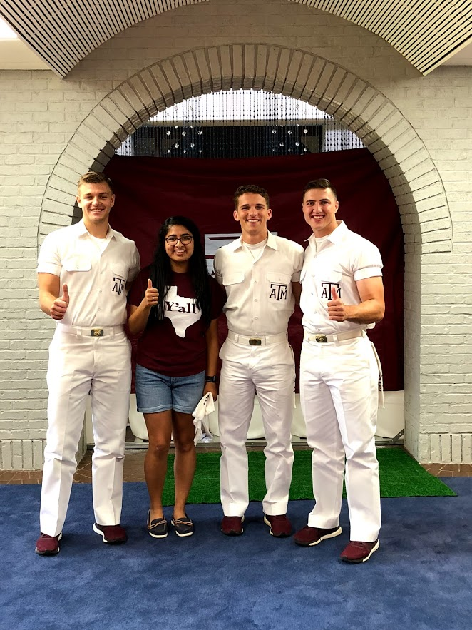
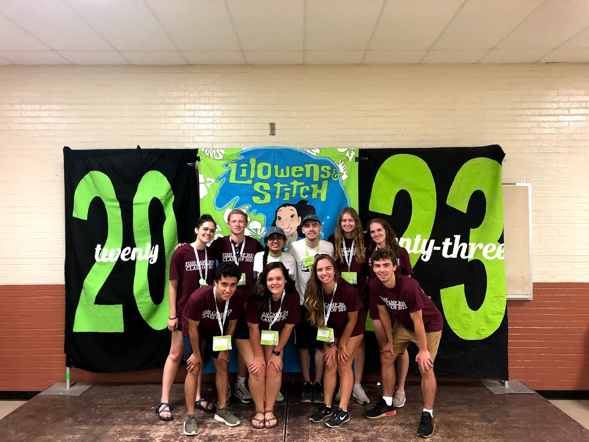

About Me

Howdy! My name is Anu Khatri, and I am junior Computer Science major from Plano, TX, and I am the loudest and proudest member of the Fightin’ Texas Aggie Class of 2022! I am also pursuing a minor in Art – New Media because I am more interested in front-end development.
The reason I chose to study computer science is that I am very interested in how technology has given industries the capability to make customer experiences better and provide better accessibility. Additionally, I have seen how many companies are being transformed into technology companies where their previous focus is now on the side. For example, H-E-B is becoming a technology company that just happens to sell groceries. These shifts have shown me there is so much room for growth and that I will constantly be learning during my career.

Outside of school, I am quite involved on campus. I have been a counselor for Fish Camp the past two years. Fish Camp is an extended orientation that freshmen have the opportunity to attend to help their transition to college. I worked with 25 other upperclassmen to create and co-facilitate activities and bonding experiences to foster a sense of community and provide a support system during all of college.
I am also involved in the Hindu Students Association, where I have been the Historian for two years. I manage the website and social media, and I have been able to greatly increase our online engagement through my work, which has translated to growing our membership.
The Hullabaloo Band is another organization that I am in. We play at volleyball and basketball games. It has allowed me to continue playing music in college, something which is very important to me because music has played a huge part in my life.
In my free time, I like to embroider, hang out with my friends, listen to music, and travel. I really enjoy concerts, so one of the first things I will do when it is safe again is to attend a concert!